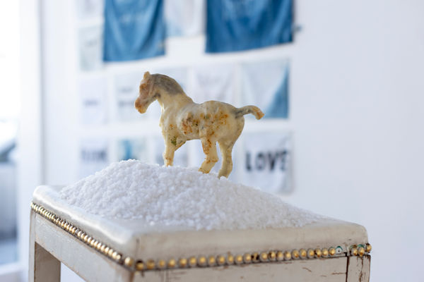

JES YOUNG IN RESIDENCY
January 13 - February 25
Closing gathering and performance by Jasmine Zhang
Saturday, February 25th, 5-8pm
During Jes's residency at DFC they created two patchworks that will hang in alignment with the gallery storefront windows. They spent their residency time tending to each step of the patchwork making process, a durational and devotional labor. They explored the slow and intentional process of natural dyeing and then cut and sewed the recycled fabrics by machine. The patchworks includes photos on silk taken through time in the Bay Area and in China, recycled fabrics dyed with California clay and loquat leaves foraged from Oakland Chinatown, and are lined with pockets to hold objects associated with loss, love, and connection. Some pockets will be left empty for visitors to contribute objects of their own. The patchworks act as an altar inspired by curio shelves and Chinese window screens and invite viewers to reflect on and honor collective grief.
The closing event is a casual, a one evening closing to celebrate Jes' return to textile work since the pandemic started in 2020, with a special performance by Jasmine Zhang at the beginning of the closing. There'll be drinks and snacks provided and hugs for the artist being accepted. Please consider wearing a mask while inside or in crowded outside space to make the event accessible and inclusive for all visitors.
Notes about objects to contribute
Objects contributed should be smaller than 8x5" (unless they are flowers then they can stick out of the pockets). Objects should also be relatively light in weight, non abrasive/sharp (to not tear the patchwork), and will not risk staining or wetting the patchwork. Please let us know if these are items you would like to be returned by emailing Jes at jessicatt888@gmail.com